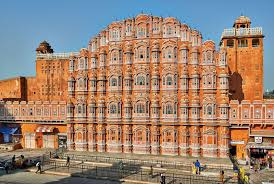
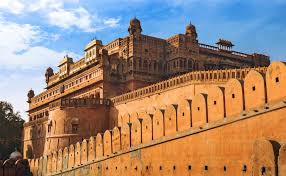
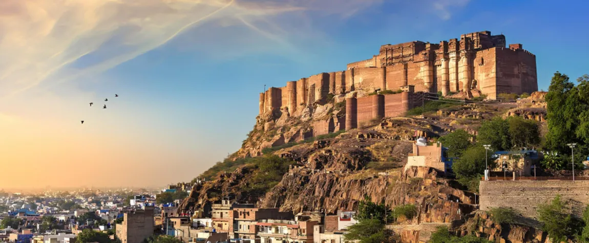
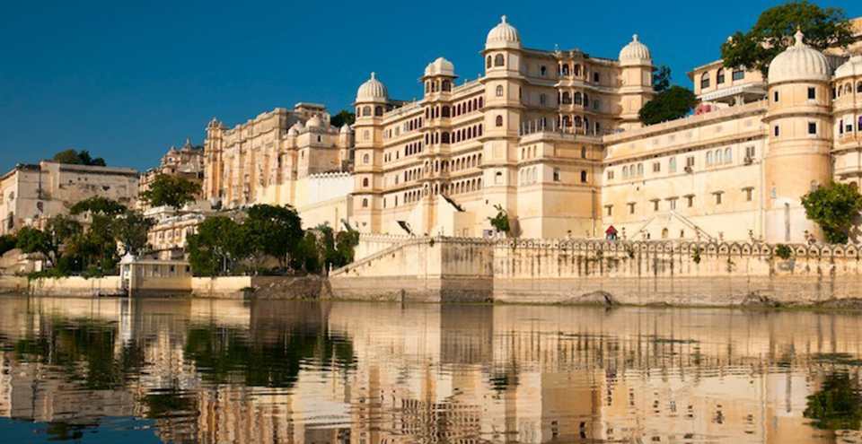

Jaipur is the capital of India’s Rajasthan state. It evokes the royal family that once ruled the region and that, in 1727, founded what is now called the Old City, or “Pink City” for its trademark building color. At the center of its stately street grid (notable in India) stands the opulent, colonnaded City Palace complex. With gardens, courtyards and museums, part of it is still a royal residence.


Bikaner is a city in the north Indian state of Rajasthan, east of the border with Pakistan. It's surrounded by the Thar Desert. The city is known for the 16th-century Junagarh Fort, a huge complex of ornate buildings and halls. Within the fort, the Prachina Museum displays traditional textiles and royal portraits. Nearby, the Karni Mata Temple is home to many rats considered sacred by Hindu devotees.

Jodhpur is a city in the Thar Desert of the northwest Indian state of Rajasthan. Its 15th-century Mehrangarh Fort is a former palace that’s now a museum, displaying weapons, paintings and elaborate royal palanquins (sedan chairs). Set on on a rocky outcrop, the fort overlooks the walled city, where many buildings are painted the city’s iconic shade of blue.

Udaipur, formerly the capital of the Mewar Kingdom, is a city in the western Indian state of Rajasthan. Founded by Maharana Udai Singh II in 1559, it’s set around a series of artificial lakes and is known for its lavish royal residences. City Palace, overlooking Lake Pichola, is a monumental complex of 11 palaces, courtyards and gardens, famed for its intricate peacock mosaics.